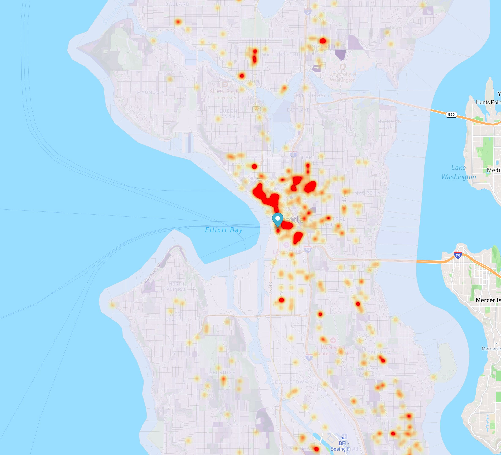

From 2010 to 2015 many events occurred. For example, the tragic Sandy Hook school shooting occured creating great fear in society about gun usage, the Indetectable Firearms Act of 1988 that required all guns have enough metal to be detected was extended until 2035, and a specific procedure was mandated for background checks for gun sales to avoid loopholes (Longley, 2023).
